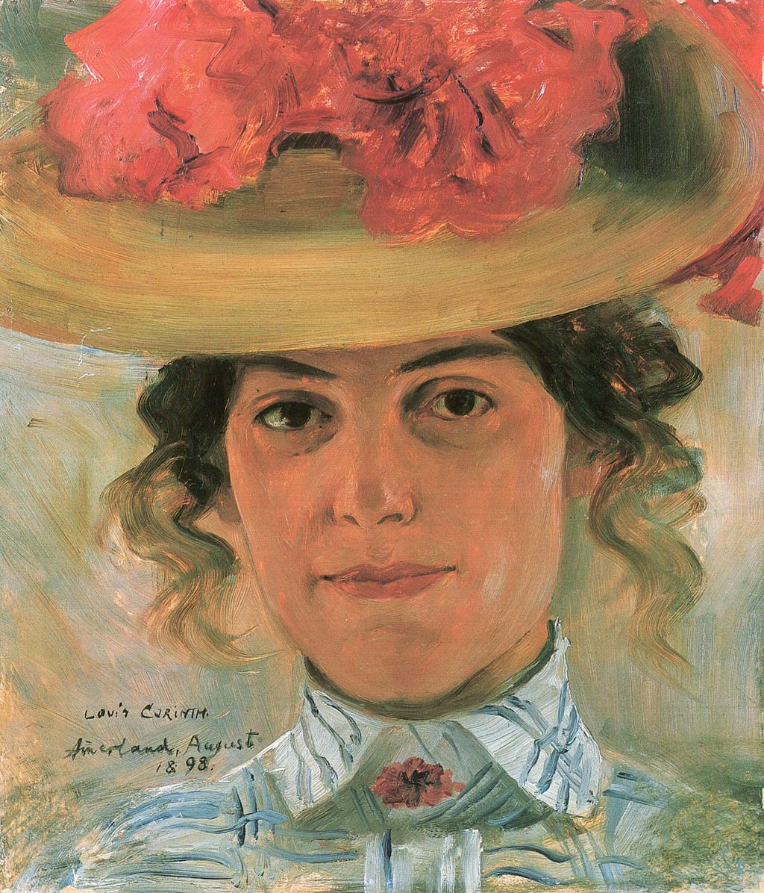

<head>
<meta charset="UTF-8" />
<meta name="keywords" content="drawing, painting" />
<meta name="description" content="drawings by Sunjy" />
<title>Sunjy</title>
<link rel="shortcut icon" type="image/x-icon" href="../../mImages/mCommon/favicon.ico" media="screen" />
<link rel="stylesheet" type="text/css" href="../../mCsses/mCommon/mCssA.css" />
<link rel="stylesheet" type="text/css" href="../../mCsses/mCommon/mCssB.css" />
<link rel="stylesheet" type="text/css" href="../../mCsses/mCommon/mCssC.css" />
<link rel="stylesheet" type="text/css" href="../../mCsses/mCommon/mCssD.css" />
<link rel="stylesheet" type="text/css" href="../../mCsses/mContent/mCssA.css" />
<link rel="stylesheet" type="text/css" href="../../mCsses/mContent/mCssB.css" />
<link rel="stylesheet" type="text/css" href="../../mCsses/mContent/mCssC.css" />
<link rel="stylesheet" type="text/css" href="../../mCsses/mContent/mCssD.css" />
</head>
<script type="text/javascript" src="../../mScripts/mContent/mContentAA.js" /></script>
<script type="text/javascript" src="../../mScripts/mContent/mContentAB.js" /></script>
<script type="text/javascript" src="../../mScripts/mContent/mContentAC.js" /></script>
<script type="text/javascript" src="../../mScripts/mContent/mContentAD.js" /></script>
<script type="text/javascript"></script> 
<script type="text/javascript">
document.write('<div class="mImgAbsolute"></div>');
/*
document.write('<p class="mFontSizeBColor" />From a white paper...</p>');
document.write('<table class="center"><tr><td>');
document.write('');
document.write('</td></tr></table>');
*/
</script>


<script type="text/javascript">
document.write('<p class="mFontSizeBColor" />Portrait of a Woman with Hat</p>');
document.write('<p class="mFontSizeSColor" />“Portrait of a Woman with Hat” by Lovis Corinth portrays Luise Halbe. Luise Christiane Halbe (1867 – 1957) was the wife of the German writer Max Halbe (1865-1944).<br><br>After the death of her husband, she founded the Max Halbe Society in Munich in 1953 to cultivate his literary estate.<br><br>In 1955, she received the Cross of Merit (Steckkreuz) of the Federal Republic of Germany, “For her special services to German literature.”<br><br>The artist Lovis Corinth (1858 – 1925) was a German artist who studied in Paris and Munich. His early work was naturalistic in approach.<br><br>In this portrait, he used vibrant colors to create a portrait of extraordinary vitality and power.<br><br>The realism of Corinth’s early works emphasized careful observation of colors and tones. Corinth was born Franz Heinrich Louis, but in 1888, he adopted the name “Lovis Corinth.”<br></p>');
document.write('<table class="center" /><tr><td>');
document.write('<br>After the death of her husband, she founded the Max Halbe Society in Munich in 1953 to cultivate his literary estate.<br><br>In 1955, she received the Cross of Merit (Steckkreuz) of the Federal Republic of Germany, “For her special services to German literature.”<br><br>The artist Lovis Corinth (1858 – 1925) was a German artist who studied in Paris and Munich. His early work was naturalistic in approach.<br><br>In this portrait, he used vibrant colors to create a portrait of extraordinary vitality and power.<br><br>The realism of Corinth’s early works emphasized careful observation of colors and tones. Corinth was born Franz Heinrich Louis, but in 1888, he adopted the name “Lovis Corinth.”<br>" />');
document.write('</td></tr></table>');
</script>


